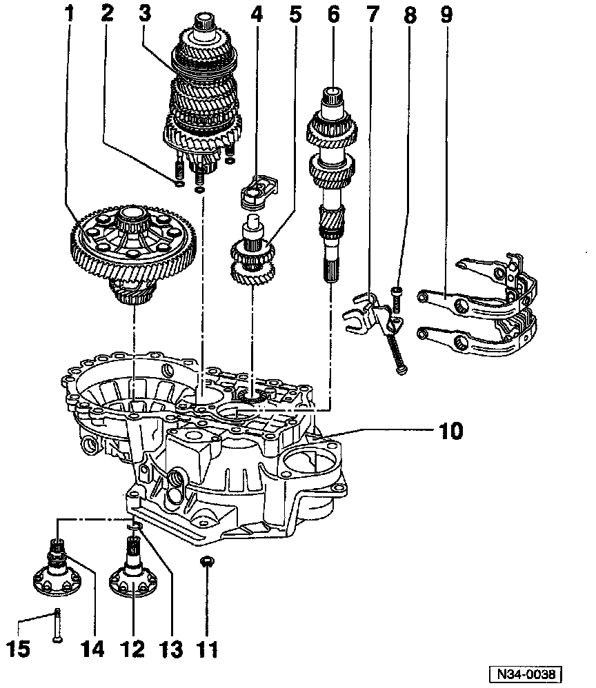

Case, M/T

1 - Differential
- Sealing ring (Quantity: 4 always replace)
3 - Output shaft
4 - Reverse idler shaft support
5 - Reverse idler shaft
6 - Input shaft
7 - Shift forks
8 - Torx(r) socket-head bolt
^ Tightening torque: 25 Nm (18 ft lb)
9 - Reverse gear shift fork
10 - Clutch housing
11 - Hex nut
12 - Axle flage shaft
13 - Circlip (always replace)
14 - Axle flange shaft with spring
^ Applications: Installed in transmissions with springs behind axle flange shafts